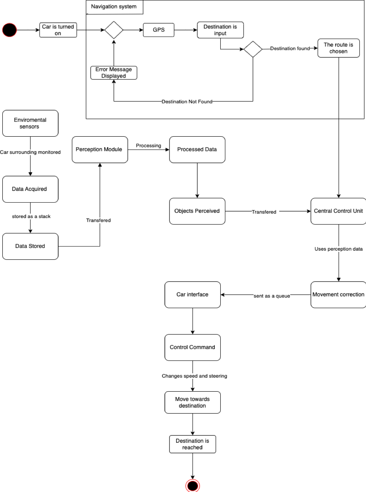
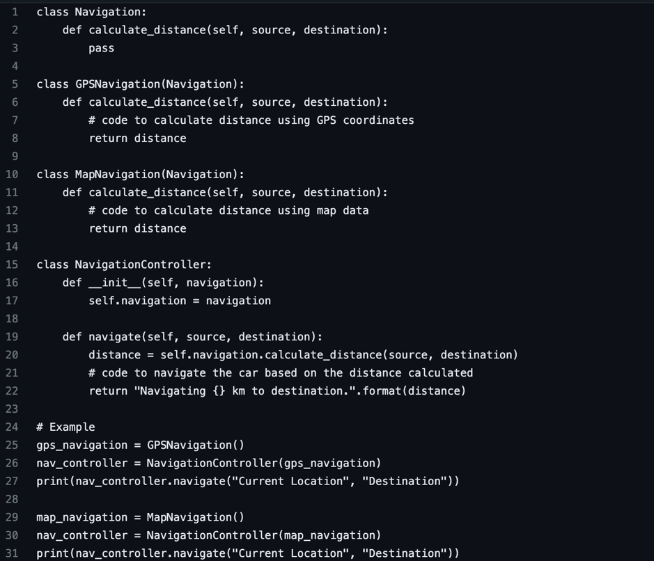
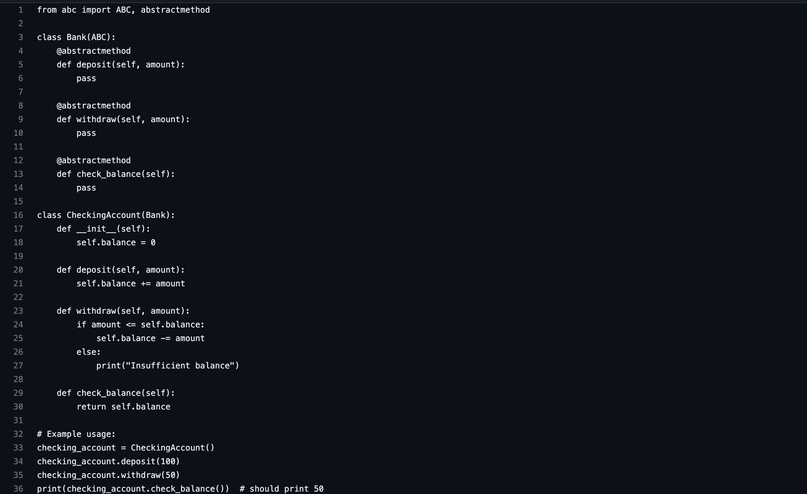
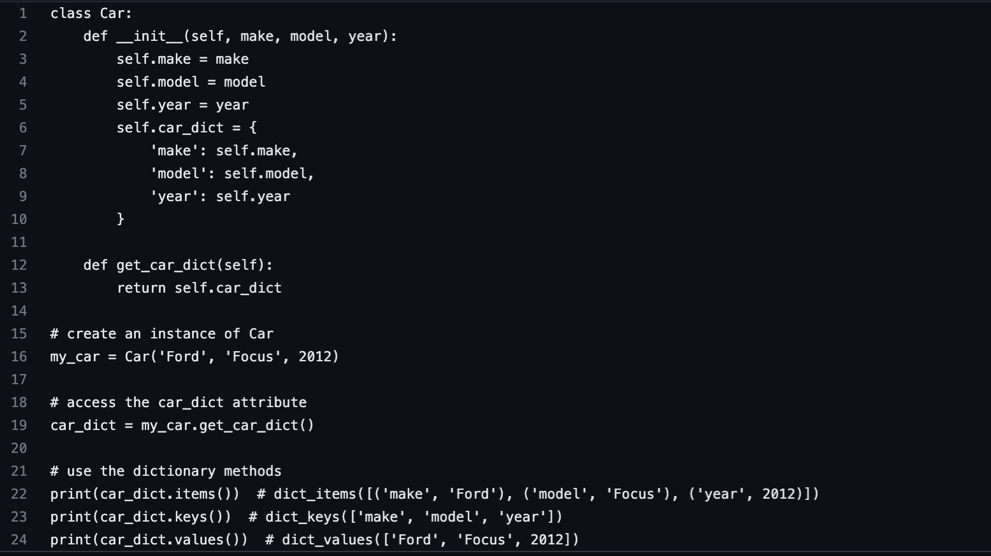
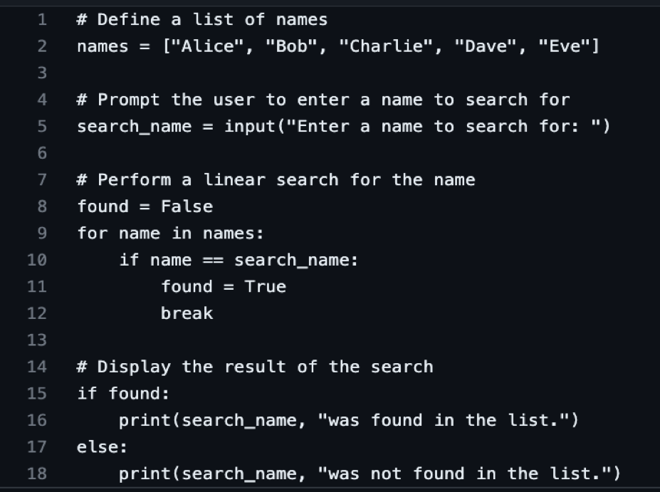
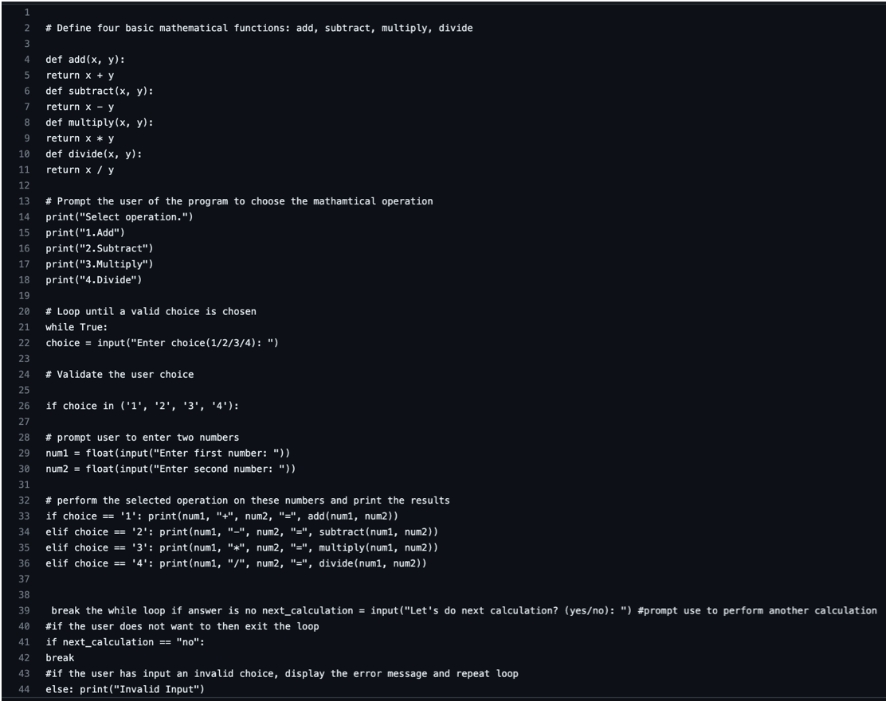

Secure software development module e-Portfolio.
Below you will find the complete collection of reflections, assignments and artefacts organized from the units.
Module Overview
Secure software development is a critical aspect of creating robust and safe software systems. This module provides a comprehensive overview of secure software development practices, covering fundamental concepts and best practices such as risk assessment, threat modelling, and secure coding techniques. We will examine different software development methodologies and how to integrate security practices into them, as well as the importance of testing and verification to identify vulnerabilities in software systems.
Learning outcomes
- Identify & manage security risks as part of a software development project
- Critically analyse development problems and determine appropriate methodologies, tools and techniques to solve them
- Design, develop and adapt programs and to produce a solution that meets the design brief and critically evaluate solutions that are produced
- Systematically develop and implement the skills required to be effective member of a development team in a virtual professional environment, adopting real-life perspectives on team roles and organisation
Unit 1: Introduction to Secure Software Development
The first unit of this module introduces the both concepts of unified modelling language (UML) and the Waterfall and Agile approaches to software development. As well as this the concepts of personal awareness and having a risk-aware culture is developed upon. As important as it is to develop software that is secure, this is only one aspect to responding to the security challenges. It is critical that the people who are internal to the organisation develop a security-responsible attitude.
Artefacts: Software development and UML
The waterfall and agile approach are two different ways to develop software. The waterfall approach is a sequential process where each step of the development cycle is completed before moving on to the next. The Agile approach is flexible and iterative, focusing on teamwork, collaboration, and customer satisfaction. The choice of approach depends on the project's requirements, complexity, and team dynamics
UML is a visual language used to design, document, and explain software systems. It has standardized diagrams that represent different aspects of a system and can be used throughout the software development process to model differing perspectives of the system. UML provides developers with a standardized way to visually communicate a software system's architecture, design and behaviour. This enabling them to better understand and communicate, software systems.
Discussion Forum
Broken access control is one of the 10 weaknesses identified by OWASP. Access control is a method for which the right to access data and functions are determined. It outlines the permissions of an authenticated user, this involves the polices or rules which are set in place to limit access, these can be but are not limited to the user device and location. Broken access control occurs when unauthorized access to data and content occurs. This includes viewing, altering and taking control over the administration of a site or program. Broken access control is a product of not effectively implementing when authentication and access restriction, therefore allowing for attackers/hackers to gain access to sensitive files and control over the systems. To prevent broken access control a focus on preventing configuration errors and promoting a higher standard of control access practices in development is necessary. This involves improving the security involved with user ID credentials so that attackers are unable to use other users to gain access. File permission protection is another necessary area of focus as although almost all data is stored in back end servers, with only a few locally stored files it is important that these are not publicly accessible and that most directories are not readable with even fewer being marked as executable. Allowing for the inclusion of different control access systems can help to provide a higher level of security that can reduce broken access control occurring by tailoring the access system specifically to the function. Such as implementing discretionary access control (DAC), role-based access control (RBAC) or mandatory access control (MAC).

References:
Unit 2: UML Modelling to Support Secure System Planning
Artefact: System Planning
The second unit discusses the creation of flowcharts and how these are applied to the design stage of SDCL for the purpose of improving communication with stakeholders. Flowcharts are diagrams that represent a series of steps in a process. They can be used in the design stage of the software development process to support communication between stakeholders. Flowcharts help developers communicate design concepts in a clear manner and identify potential issues in the process. They also improve the final product's quality by ensuring it meets all requirements and is efficient as well as reliable.
Scrum Security Review
The 2-column table I made below includes the software development stages and the processes which are recommend to be applied at each stage to ensure that secure software is produced:
References: Sharma, A. & Bawa, R. K. (2020) Identification and Integration of Security Activities for Secure Agile Development. International Journal of Information Technology.
Blog Post
Select five terms from ISO/IEC Standard 27000 Section 3 Terms and Definitions and write about how people can be managed to overcome cyber security attacks from the inside.
Access control refers to the practice of limiting access to certain resources or data within an organization to only authorized individuals or systems. Access control can be implemented through various methods such as passwords, biometric identification, or security tokens. (Iso, 2022)
Authentication is the process of verifying the identity of an individual or system. This can be done through various methods such as passwords, biometric identification, or security tokens.(Vaish et al, 2020) Authentication is an important part of access control, as it ensures that only authorized individuals or systems are given access to certain resources or data.(Vaish et al, 2020)
Continual improvement refers to the ongoing process of improving an organization's information security management system (ISMS). Continual improvement involves regularly reviewing and updating security policies, procedures, and practices to ensure that they remain effective in the face of evolving cybersecurity threats.
Information security is the practice of protecting the confidentiality, integrity, and availability of data and information within an organization. Information security involves implementing various security controls and measures to protect against cyber threats such as hacking, phishing, and malware.
A management system is a framework of policies, processes, and procedures used to manage an organization. An information security management system (ISMS) is a specific type of management system that focuses on managing the security of an organization's information and data.
To manage people and overcome cybersecurity attacks from the inside, organizations need to implement effective security measures and policies that address human behaviour. This can include training employees on cybersecurity best practices, implementing strict access controls and authentication procedures, and regularly reviewing and updating security policies to address new and emerging threats. Additionally, organizations should conduct regular audits and assessments to identify vulnerabilities and improve the effectiveness of their security measures. By continually improving their security posture and addressing the human element of cybersecurity, organizations can better protect themselves against cyber-attacks from the inside.
References:
Unit 3: Programming Languages: History, Concepts & Design
The third unit discusses the different types of UML diagrams and the importance of each of them, most importantly the class diagram. The class diagram is essential to be understanding on how to implement it as it is heavily involved in OOP coding. The third unit also provides a key understanding into the different stages of software development and the overall system design.
Artefact :UML and development life cycles
UML is a modelling technique that shows the step wise details of components involved with the development of a system. UML models contain elements such as the use actors, classes and packages involved in a project. It is used to show visually a specific perspective. The two main types of UML diagrams are structural and behavioural diagrams. Structural diagrams show the different elements present in the system while behavioural diagrams show the how the object in the system interact with each other to create a functioning system.
Use case diagram is utilized at the requirement gathering stage of development. This is in order to identify the different scenarios present in the system.
Class diagram are used during the design stage to represent the different classes and objects present as well as the relationships between them.
Sequence diagrams are used during the development stage to show the different interactions between objects or components present in the system and how these occur.
Activity diagrams are used during the both the requirement and packaging stage to show flow of activities and decision paths present in the system.
State diagrams are useful at any stage of development except the final packing stage. It is used the model the behaviour of object in the system. This shows the different states of an object or component can be in and the events that cause these changes.
Below shows a state machine diagram made for a washing machine system:

References: Jacobson, I., Rum baugh, J. & Booch, G., (2004). The Unified Modeling Language Reference Manual. 2 ed.
Discussion Forum
Summary Post
My initial post outlined the ranking for which I believed best suited the impact of the eleven key assets identified in the paper by Padhy et al, which affect the reusability of object-oriented software. My ranking consisted of the top six most important factor and the remaining 5 were deemed as less impactful. After reviewing the views of my peers in regards to this topic the general consensus was that is seemed to be arbitrary to rank the individual factors based on their merits in isolation. This is due to in reality the factors are applied together to make the biggest impact on reusability. It is also clear that it depends on an individual’s perspective on which factors present the most value as amongst my peers the lists generated were all unique. Although the general consensus is that requirement analysis is the most impactful factor. I believe that in my initial post I discounted the other unranked 5 factors, as I only saw basic implications for each of these however test cases seemingly has a larger impact than I initially gave it. This is due to my focus on development rather than user experience and accessibility where a good and effective testing plan will help to create the best possible software, that as a whole can be reused with minor changes in the future.
Overall the article by Padhy et al, has improved my understanding of the complex nature of software development having to account for not just the current project but how aspects can be reused in order to streamline future projects.
References: Padhy, N., Satapathy, S., & Singh, R.P. (2018) 'State-of-the-Art Object-Oriented Metrics and Its Reusability: A Decade Review'
Unit 4: Exploring Programming Language Concepts
The fourth unit discusses the implementation of UML designs to a program and the further creation of other types of UML designs not yet explored such as an activity diagram. This unit also introduced the different types of views for which the types of UML diagram represents.
These are the: use case view point which addresses the functionally based on the user perspective.
The structural view which describes the overall structure present in the system.
The behavioural view which describes the dynamic behaviour present in the system between object and components.
Implementation view which shows how a system is implemented with the use of source codes and the overall framework used in development.
Deployment view describes the actual deployment of the system these include the hardware and infrastructure needed to run said system.
Process view point which describes the combination and cooperation of multiple aspects of the system to handles processes and tasks. Examples of these are sequence and activity diagrams.
Artefact: UML design
Activity diagrams display the sequence of activities, decision points and the differing branching paths present in the system. The following activity diagram displays a self-driving car system involving navigation, environmental and internal systems of the car.
Unit 5: An Introduction to Testing
The fifth unit focuses further on developing the concept of classes. It introduces and further develops the concepts of classes, inheritance and data structures. Specifically polymorphism and variable constructors developed upon, these concepts provide the ability to execute class methods based on object creation.
Artefact: Polymorphism
Polymorphism is a fundamental concept of object oriented programming that allows different types of objects to be treated as if they are the same type. Therefore a single method or function can be used to operate different objects as long as they share the common super class. This allows for code reusability and modularity key concept of OOP.
The following python program shows the use of polymorphism for a program usable within a system for the driverless car:
Unit 6: Using Linters to Support Python Testing
The sixth unit discusses the concepts of abstract methods and interfaces. The concept of encapsulation is also introduced which involves the grouping of attributes and different data structures. An abstract method is declared in a class but does not have any implementation. This is for the purpose of providing a blueprint for its subclasses to implement the functionality of it. An interface is similar to this however an interface can only contain abstract methods and constants.
Artefacts: Abstraction in Object Oriented Programming
Metrics used to assess the features of an object oriented program
There are several metrics used to assess the features of an object oriented program. These metrics provide a way to measure the quality of a programs design and implementation, therefore helping to identify potential issues and aspects to be improved. The most commonly used metrics used are as follows:
Coupling, this measures the degrees of interdependence that is present between set classes of a program. A high coupling indicates that changes to one class will heavily affect others, making the program harder to change and modify.
Cohesion, this measures the degree to which member of a class are related to each other. High cohesion indicated that the member of the class are closely related and work together to achieve a common goal.
Inheritance depth, this measures the number of levels inside a class hierarchy. The higher this depth the more complex and difficult it is to understand.
Method complexity, this measures the difficulty of individual methods in a class. A high method complexity can indicate that a method is doing too much and may be too complex.
Code coverage, this measures the amount of code that is executed during testing. High code coverage indicated that most of the code has been tested and is less likely to contains errors.
Cyclomatic complexity, this is most used metric. It measure the number of independent paths in a program. The higher the complexity the more the difficult and harder to modify or understand.
References: Brij, & Goel, Dr. Brij Mohan & Pradeep, Prof & Bhatia, Pradeep. (2013). An Overview of Various Object Oriented Metrics. International Journal of Information Technology and Systems (IJITS)
Below show a python program which has three abstract methods and one subclass. This is used to allow a user to perform a three basic banking operations these are deposit, withdraw and checking the balance. While the “checking account” serves as the subclass and actually allows for the implementation of the operations for a user due to the use of “abstract method” decorator for the purpose of showing the use of the subclass.
Article Review
The article by Knox et al. (2018) discusses many the concept of a modelling management resource system in the form of Pynsim. Component based modelling as described in this article is an approach to modelling a complex system by breaking it down into smaller components which can then be modelled and analysed separately. These components can then be combined back together to a larger system with the behaviour of the system determined via the interactions between these components. Component based modelling frameworks depend on several elements such as the component architecture, component libraries, model composition as well as verification and finally the documentation stage. This link to Pynsim a central focus of this paper, Pynsim is a python based simulation framework that allows for the modelling and analysis of complex dynamic systems. It is built to be flexible as well as modular. It can even provide pre built components for common systems. Pynsim includes a simulation engine that execute a model and produce outputted data. In conclusion, Pynsim is a powerful for modelling a simulating complex systems in a user friendly way and due to its python based architecture, allows for easy integration with different python libraries and tools.
References: Knox, S. et al. (2018) “A python framework for multi-agent simulation of Networked Resource Systems,” Environmental Modelling & Software, 103, pp. 16–28.
Unit 7: Introduction to Operating Systems
The seventh unit discusses the concepts of debugging and error handling as well as the concepts of data structure and searching. The seventh unit also marked the submission of the first assignment of the module which involved a accumulation of all the UML concepts previously discussed.
Artefacts: Data structures
Data structures are essential for object-oriented development because they enable developers to efficiently and systematically organize, store, and work with data. Lists are one of the most commonly used data structures in object-oriented programming. They facilitate easier data management and manipulation by allowing developers to store collections of objects or values. Another frequently used data structure in object-oriented programming is dictionaries. They enable programmers to store data as key-value pairs, allowing for data retrieval and updating. Sets are another structure in object-oriented programming that represent a collection of unordered unique elements. They allow developers to use set operations such as union, intersection and difference.
These data structures can be used to represent a variety of real-world objects or concepts in object-oriented programming these help to support object-oriented development by allowing developers to organize, store, and manipulate data in an efficient and structured manner.
The below program shows the creation of a nested dictionary of data on cars within a Car class. The program is extended to work with the dictionary by calling the following methods: items(), keys(), values():
Reflection: Design Proposal
The first assignment of this modules was to make a design proposal for a piece of software that could help with the processes of a self-driving or automated car. This involved the creation of five different UML designs these included the: class, use case, sequence, activity and state diagrams. I found some of these more difficult to apply than other. The use case diagram and especially the sequence diagram were particularly difficult for me due to having less experience making these but I felt as though the finished product of these did reflect what I wanted to the best of my ability. My program that I detailed in the design documentation described a data transferring program that could take data acquired from the sensors package and send it to the correct aspects of the car system such as the navigation of perception modules to analyse. Tis would then be send to the central control unit that would make decisions on the cars current objects changing to be in line with any detections or environmental dangers. This would then be sent to the cars interface to change the steering, acceleration and deceleration. This is the basis of my program, at the begin of this task I found it difficult to start as I was concerned with trying to program the entirety of a self-driving car system. I soon realised that this was too far out of my abilities and had to limit the program to just dealing with the navigation, environmental and movement of the car by transferring data and storing data to the correct components in different data types such as lists, stacks, queues and dictionaries.
Unit 8: Cryptography and Its Use in Operating Systems
The eight unit of the module focuses on data structures and data searching. It focuses on understanding how data sets are compared using set operation. This is useful as it can help to organize coding structure and understand different types of data.
Artefact: Data Structures
Set operations such as Union, Intersection, Difference and Symmetric difference can be used to manipulate sets of data that represent various characteristics of the car's environment, such as its sensors, external surrounding, and driving rules.
The union of two sets A and B is a new set that contains all the elements that are in A or B or both. For a self-driving car, the union operation could be used to combine the data from multiple sensors such as lidar, radar, and cameras, into a single set representing the car's environmental perception.
The intersection of two sets A and B is a new set that contains all the elements that are in both A and B. For a self-driving car, the intersection operation could be used to filter conflicting data from different sensors retaining only the consistent data that represents the car's true environment.
The difference of two sets A and B is a new set containing all the elements that are in A but not in B. For a self-driving car, the difference operation can be used to identify and remove unwanted anomalies from the environment set.
The symmetric difference of two sets A and B is a new set containing all the elements that are in either A or B but not inside both. For a self-driving car, this can be used to compare and contrast the data from two sets, these set can be anything where the car need to detects changes or differences between modules such as perception.
The following Python program shows a simple name directory that carries out a linear search on a list data structure.
Discussion Forum: Metamodel design for OO design for IoT
The article by Fortino et al. (2015) discusses the design and application of a metamodel. We can apply this information to determine the strength and weaknesses of designing a metamodel for object oriented design of the internet of things (IoT). The metamodel can provide a standardised way of designing IoT systems which can help to reduce complexity. As well as it provide an abstract view of a system which can help developers understand the system in more detail. The drawbacks of this are that metamodels can add an additional level of complexity to the design process, while at the same time the opposite can occur where processes and features are generalised for the purpose of making a metamodel. The metamodel omit certain aspects of the system and not cover all aspects of IoT design such as the security, privacy and scalability.
Overall the design of metamodels for object-oriented design of the IoT can have many benefits, but it also requires consideration of its weaknesses as well.
References: Fortino, G., Guerrieri, A., Russo, W. & Savaglio, C. (2015) Towards a Development Methodology for Smart Object-Oriented IoT Systems: A Metamodel Approach. 2015 IEEE International Conference on Systems, Man, and Cybernetics. 1297-1302. DOI: 10.1109/SMC.2015.231.
Unit 9: Developing an API for a Distributed Environment
The ninth unit is a continuation on testing approaches, it reiterates how consistent debugging and testing is vital for an effective development of a system. This unit introduces different types of testing, these are: manual, automated and black box testing. These are used to ensure a viable product after the development stage.
Artefact: Errors and testing
Cyclomatic complexity is one of the most commonly used metrics for assessing the complexity of an object oriented program. It can provide a qualitative measure of the independent paths present in a program. Although useful it doesn’t not provide full view of the complexity of a program as it does not take into account code semantics or the actual design of the program. There are alternative metrics that can be used separately or alongside cyclomatic complexity these are discussed below:
Code lines, this is a simple metric which counts the total lines of code used in the program. Although this does not always give an accurate representation due to different programming languages and they differing designs of a program but it can still provide a simple way to measure the complexity and size.
The maintainability index uses multiple factors such as the cyclomatic complexity and code length to provide a metric of how simple it is to edit, maintain and update a program. The higher this index the easier it is to understand and modify.
The cohesion and coupling measure the degree to which different components of a program are connected together. High cohesion and low coupling are usually signs of a good design.
The general view that I’ve concluded from these paper is that the best metric depends on the situation, with the most effectively commonly being a combination of multiple metrics.
References:
Unit 10: From Distributed Computing to Microarchitectures
The tenth unit focuses on the various methods and reasons for testing and debugging these link directly to the second assignment of module ‘system implementation’.
Artefact: Testing
Testing and debugging are essential for software development. The testing phase is the process of identifying defects and errors in the software, while the debugging phase is the process of fixing said errors. The following are the stages are the different types of testing and debugging that can be implemented:
Unit Testing, is a type of testing that tests the individual units or components of the software. It is usually conducted in the coding phase of development. The purpose of unit testing is to identify and fix errors and defects in individual units before the integration into a larger system.
Integration Testing, involves testing the interaction between differing units or components of the software. This type of testing helps identify defects that arise due to interactions between components.
System Testing, is the process of testing the entire software system as a whole to ensure that it meets the specified requirements.
Acceptance Testing, is the process of testing the software to ensure that it meets the user's requirements and expectations. It is usually conducted via the client.
Performance Testing, is a type of testing that tests the performance and responsiveness of the software under different conditions.
Security Testing, is a type of testing that tests the security of the software and identifies any vulnerabilities or weaknesses that may be exploited.
Debugging, Debugging is the process of identifying and fixing defects and errors in the software.
In conclusion the testing and debugging phase is critical in ensuring the quality and reliability of the software, and it should be conducted thoroughly to reduce the risk of defects and errors in software.
Discussion forum: Summary post
After the initial discussion posts from my peers about the topic of object oriented design of IoT system, it seems the general consensus was that metamodels present value to the design process however does have some major drawbacks.
Two major strengths statued in the initial post are as follows. The metamodel can provide a standardised way of designing IoT systems which can help to reduce complexity. As well as it provide an abstract view of a system which can help developers understand the system in more detail. Something that I initially missed in my initial post was some other key benefits of metamodel design which links directly to OOP, that being reusability and flexibility. The metamodel can help identify common patterns and reusable components of the system which can help to reduce the development time and resources. While the meta model can support multiple implementations and platforms. This can improve the flexibility and adaptability.
The rest of my views regarding the weakness remain relatively the same these being, that metamodels can add an additional level of complexity to the design process, while at the same time the opposite can occur where processes and features are generalised for the purpose of making a metamodel.
Reference: Fortino, G., Guerrieri, A., Russo, W. & Savaglio, C. (2015) Towards a Development Methodology for Smart Object-Oriented IoT Systems: A Metamodel Approach. 2015 IEEE International Conference on Systems, Man, and Cybernetics
Packaging and testing
The following program shows the use of appropriate comments and documentation to support sample code given. this refers to the activity 1 and 2 of seminar preperation. 